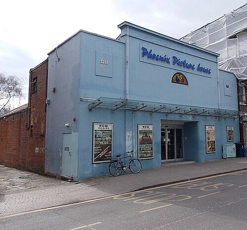
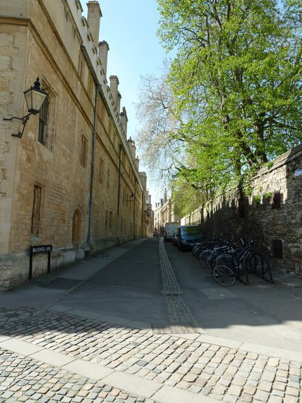
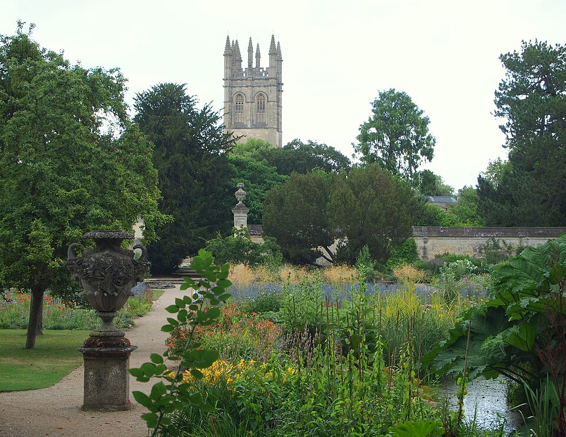
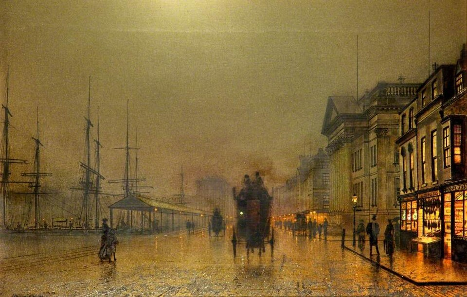
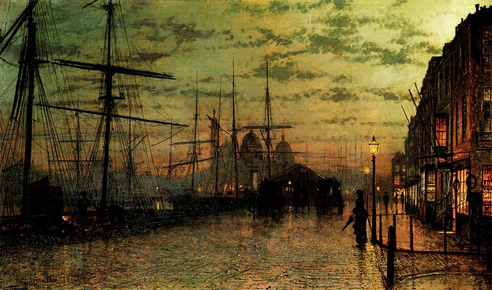

Роман · 1977
Безмолвный мир Николаса Куинна
The Silent World of Nicholas Quinn — третий роман об инспекторе Морсе. Русское название рабочее.
- Первое издание
- Macmillan, Лондон, 5 мая 1977
- Расследуют
- инспектор Морс и сержант Льюис
- Место
- вымышленный Оксфордский синдикат заграничных экзаменов и центр Оксфорда
- Экранизация
- «Инспектор Морс», 13 января 1987, вторая серия первого сезона; режиссёр Брайан Паркер, сценарий Джулиана Митчелла
- Радио
- BBC Radio 4, 1996: Морс — Джон Шрапнел, Льюис — Роберт Гленистер
Завязка
Оксфордский синдикат заграничных экзаменов составляет и проводит школьные экзамены в странах, связанных с Британией. Им руководят штатные сотрудники во главе с секретарём доктором Бартлеттом, а надзирают двенадцать «синдиков» из числа членов оксфордских колледжей. Роман открывается заседанием комиссии по найму: место освободилось, потому что прежний сотрудник Джордж Блэнд уехал в министерство образования богатого нефтью эмирата Аль-Джамара в Персидском заливе. Химик Кристофер Руп убеждает коллег взять Николаса Куинна. Куинн почти полностью глух, но превосходно читает по губам.
Через несколько месяцев Куинн не выходит на работу в понедельник. Его находят мёртвым у себя дома: цианистый калий. Последний раз его видели в синдикате в пятницу утром, а все сотрудники с высшим образованием в пятницу после обеда разошлись, и почти у каждого был билет в кинотеатр «Студио 2» на Вальтон-стрит.
Синдикат — портрет места, где работал сам Декстер. Глухота заставила его в 1966 году, в тридцать шесть лет, оставить преподавание, и до пенсии в 1988-м он служил старшим помощником секретаря в Оксфордской делегации местных экзаменов. Поэтому книга о глухом экзаменаторе написана изнутри.
Развязка — открыть, если роман прочитан
У Моники Хайт были романы и с Дональдом Мартином, и с Филипом Оглби, отсюда путаница в показаниях. Потом убивают и Оглби; в его дневнике находят рисунок киношного билета Куинна. Вражда Бартлетта и Рупа оказывается спектаклем: оба замешаны в продаже экзаменационных заданий кандидатам из Аль-Джамары, а с ними и Блэнд.
Куинн прочитал по губам неосторожные слова на приёме для делегации из Аль-Джамары. Морс сначала решает, что Куинна отравил Бартлетт, а Оглби убили за собственное расследование. Лишь на последних страницах он понимает, что Куинн читал по губам не безошибочно: там, где он увидел «доктор Бартлетт», было сказано «Дональд Мартин». Мартин, замешанный в махинации, и убил обоих.
Люди
| Имя | Кто это |
|---|---|
| Николас Куинн | Новый сотрудник синдиката, глухой, читает по губам. |
| Доктор Томас Бартлетт | Секретарь синдиката. |
| Филип Оглби | Его заместитель. |
| Моника Хайт | Сотрудница синдиката. |
| Дональд Мартин | Сотрудник синдиката. |
| Доктор Кристофер Руп | Химик, один из синдиков; добился назначения Куинна. |
| Джордж Блэнд | Прежний сотрудник, уехал в Аль-Джамару. |
| Констебль Диксон | Помощник Морса и Льюиса. |
| Стрейндж | Начальник Морса, см. статью. |
Места
Действие почти не выходит из центра Оксфорда, и по нему удобно гулять: от Вальтон-стрит в Джерико через Брод-стрит к Тёрл-стрит.
| Место | Что там происходит | |
|---|---|---|
| Синдикат, Чосер-роуд | вымысел | Чосер-роуд есть в Кембридже, а в Оксфорде нет. Прообразом могла быть Кентербери-роуд в Северном Оксфорде. |
| Дом Куинна | вымысел | Квартира в Кидлингтоне; улица Пайнвуд-Клоуз выдумана. |
| «Студио 2», Вальтон-стрит | есть | Кинотеатр, куда в пятницу собирались сотрудники. Сейчас здесь кино «Феникс». |
| Кранэм-террас, Джерико | есть | Здесь ставят машину Моника и Мартин. |
| «Белая лошадь», Брод-стрит | есть | Паб, знакомый по второму роману. |
| «Королевский герб», Холиуэлл-стрит | есть | Старый паб на углу Холиуэлл и Паркс-роуд. |
| Бар «Тёрл» | закрыт | Бар на Тёрл-стрит, закрылся в 2011 году. |
| Иффли-роуд | есть | Здесь Морс жил студентом. |
| Аль-Джамара | вымысел | Эмират в Персидском заливе. |







_-_Liverpool_Docks_by_Night_-_WAG_10328_-_Walker_Art_Gallery.jpg){kind=link}
Морс в этом романе
Холостяцкая квартира на самом верху Северного Оксфорда, стрижка в Саммертауне, редеющие волосы, сигареты. Машину Морс ставит на место для скорой помощи, как и в сериале. Пиво разогревает его воображение, особенно в больших количествах. О «Кольце нибелунга» он рассуждает со знанием записей: сравнивает Шолти и Фуртвенглера.
Любимое правило Морса здесь — изречение австрийского криминалиста Ганса Гросса о роли случая в расследовании. В сериал эта цитата не попала.
Кроссворд
Морс решает вопрос «Островки Лангерганса», восемь букв. Ответ — PANCREAS, поджелудочная железа: островки Лангерганса — скопления её клеток, вырабатывающих инсулин. Такой вопрос и есть кроссворд «Таймс» в миниатюре: чтобы ответить, надо помнить анатомию, а не только словарь.
Льюис
В романе у Льюиса две дочери, в сериале сын и дочь. Его спрашивают, как его зовут, и Декстер имени не называет: известно только, что своё имя Льюис не любит.
Книги, стихи и латынь
- Сэмюэл Джонсон — его мысль о том, что кто не думает о своём желудке, не подумает и ни о чём другом, пересказывает один из героев.
- Диккенс, «Посмертные записки Пиквикского клуба»: Бартлетта называют «пиквикским».
- Эндрю Марвелл, «К стыдливой возлюбленной» — строки о могиле.
- Йейтс, «Водомерка» (Long-Legged Fly) — Бартлетт вспоминает образ насекомого, скользящего по воде.
- Латынь: O tempora! O mores! («О времена! О нравы!») в письме Куинну, ad nauseam, mirabile dictu («удивительно сказать») и mors, mortis полицейского врача, где слышится фамилия Морса.
Картины
В кабинете Куинна висят два пейзажа Аткинсона Гримшоу, мастера ночных городских видов викторианской эпохи: доки Халла и доки Ливерпуля.


Реалии
- Экзаменационный синдикат
- В Британии выпускные школьные экзамены составляли и принимали не министерство, а экзаменационные советы, многие при университетах. Оксфордский и кембриджский советы работали и для школ за границей. Синдики — члены университета, которые надзирают за таким советом.
- Мезонет (maisonette)
- Квартира в двух уровнях с отдельным входом, обычно в небольшом доме. В такой жил Куинн.
- Чтение по губам
- Навык глухих и слабослышащих, но не точное чтение мыслей: многие звуки на губах выглядят одинаково. На этом построена развязка.
- Нефтяные эмираты Залива
- После нефтяного кризиса 1973 года государства Персидского залива разбогатели и охотно покупали британское образование, от экзаменов до преподавателей.
- Тёрл-стрит
- Узкая улица между Брод-стрит и Хай-стрит, вдоль колледжей Эксетер, Джизус и Линкольн.
Книга и сериал
Это вторая серия «Инспектора Морса», 13 января 1987 года. В ролях: Джон Тоу, Кевин Уотли, Барбара Флинн (Моника Хайт), Майкл Гоф (Оглби), Клайв Свифт (Бартлетт), Энтони Сми (Руп), Роджер Ллойд-Пэк (Мартин), Фил Найс (Куинн), Питер Вудторп (Макс). Серию считают очень близкой к книге.
- Почти вся предыстория выброшена: серия начинается, когда Куинн уже работает в синдикате.
- Фильм, на который идут сотрудники, заменён на «Последнее танго в Париже».
- Оглби в сериале составляет кроссворды; в книге этого нет.
- Приём для шейха снимали в Брейзноузе (он играет Лонсдейл), слежку Льюиса за Рупом — на площади Рэдклиффа, в Брейзноуз-лейн и в саду Эксетера, встречу Рупа с Бартлеттом — в Ботаническом саду, сцены у кино — у таверны «Джерико», рядом со «Студио 2».
- Музыка: увертюра к «Вольному стрелку» Вебера, когда Морс сидит над кроссвордом, симфония ре минор Франка, «Нюрнбергские мейстерзингеры» Вагнера и ларго из концерта Генделя.